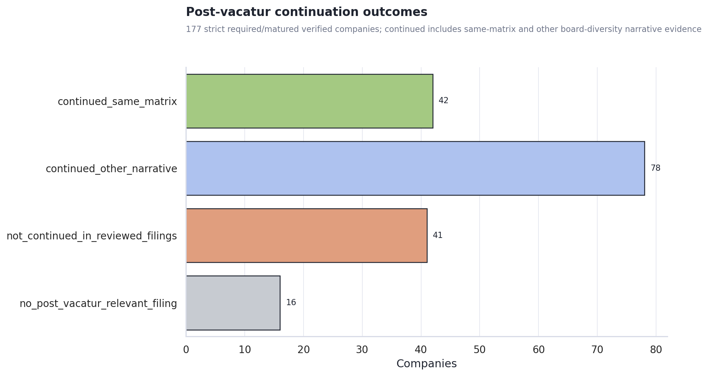
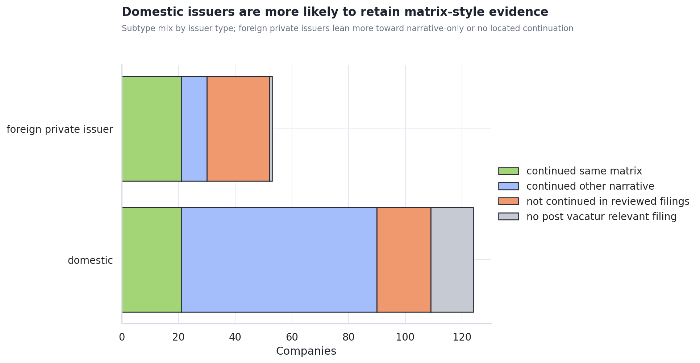
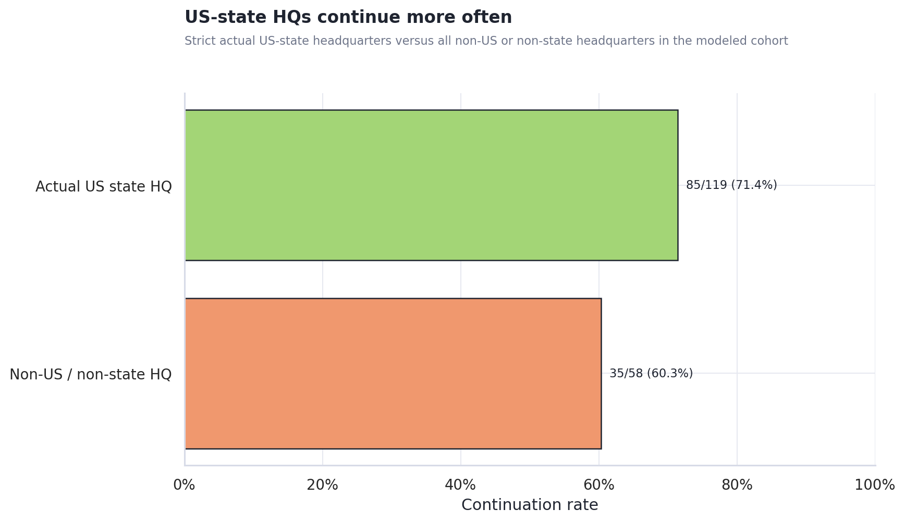
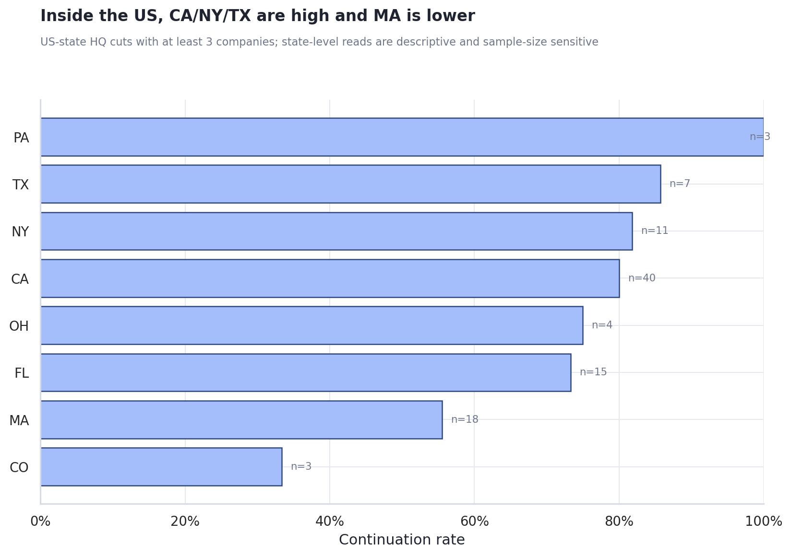
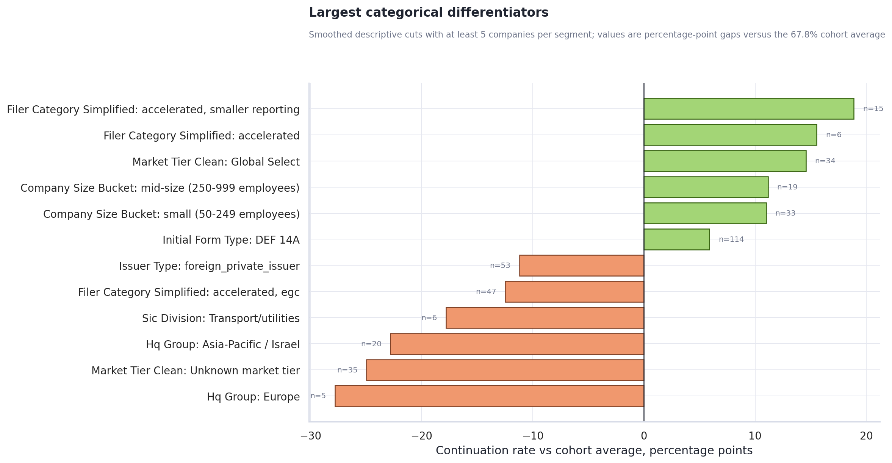
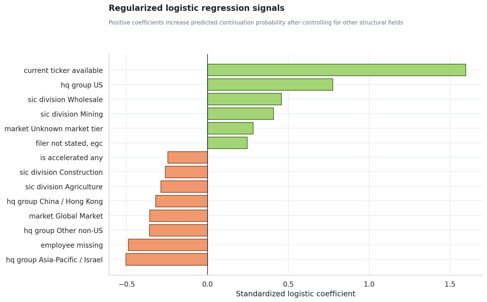
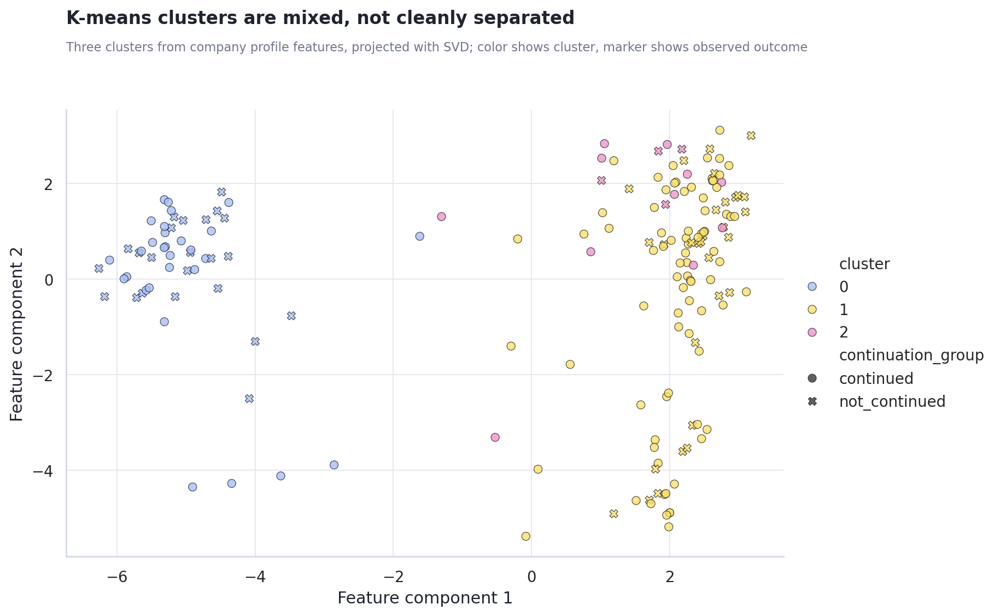

Post-Vacatur Continuation Differentiators
Executive Summary
Most validated companies continued some board-diversity disclosure. In the strict required/matured verified cohort, 120 of 177 companies continued after the December 11, 2024 vacatur (67.8%): 42 kept a matrix and 78 kept other board/diversity narrative.
The cleanest structural signal is domestic, US-centered operating-company profile. Domestic issuers continued at a higher rate than foreign private issuers, and US-headquartered companies were materially more likely to continue than several non-US clusters.
The models find weak-to-moderate rank-order signal, but not a hard separator. The best non-baseline cross-validated model was knn_k_11 with AUC 0.652; the base-rate benchmark has AUC 0.500. K-means clusters stayed mixed, so these are useful differentiators, not a deterministic classifier.
Do not use post-vacatur filing availability as a company trait. Candidate filing count separates outcomes strongly, but it is partly definitional because companies with no relevant post-vacatur filing cannot show continuation evidence in this pipeline.
Outcome shape
The continuation label has two positive modes. A company is counted as continued when a post-vacatur filing either contains a high-confidence Board Diversity Matrix or contains board/diversity narrative. Narrative continuation is the larger positive bucket, so the answer should not be read as “most companies kept the exact Nasdaq matrix.”

build/post_vacatur_continuation_by_company.csv. The review form set includes proxy, annual, and selected foreign issuer forms after December 11, 2024.What we found so far
The main behavioral split is not simply company size or industry. The evidence points first to issuer/reporting structure: US or domestic companies, proxy-style evidence, and higher market-tier companies continued at higher rates. Foreign private issuer and 20-F-linked groups continued less often.
Continuation often became softer rather than disappearing. The largest positive bucket is not same-matrix continuation; it is other board/diversity narrative. That means the post-vacatur behavior is partly a shift from explicit Nasdaq matrix form toward more general governance/diversity language.
Continuation subtype differs by issuer type
Domestic issuers carry more of the same-matrix signal. Foreign private issuers are lower overall and the evidence mix is more dependent on narrative or missing/review-negative outcomes. This is one reason the model repeatedly surfaces issuer type, 20-F source, and geography together.

Geography deep dive
Strict US-state headquarters remain higher than the rest of the cohort. Actual US-state HQ companies continued at 85/119 (71.4%), compared with 35/58 (60.3%) for non-US or non-state HQ records. The broader domestic/US signal is therefore not only a labeling artifact.

Inside the US, CA, NY, and TX look high; MA is the clearest lower-rate state with a useful denominator. Pennsylvania is 100%, but only three companies. Colorado is low, also only three companies. Massachusetts has enough rows to take seriously as an early review signal.

US states with at least 3 companies
| value | n | continued | not_continued | continued_share | continued_share_ci_low | continued_share_ci_high | signal_confidence |
|---|---|---|---|---|---|---|---|
| PA | 3 | 3 | 0 | 100.0% | 43.8% | 100.0% | too small |
| TX | 7 | 6 | 1 | 85.7% | 48.7% | 97.4% | early signal |
| NY | 11 | 9 | 2 | 81.8% | 52.3% | 94.9% | directional |
| CA | 40 | 32 | 8 | 80.0% | 65.2% | 89.5% | stronger descriptive signal |
| OH | 4 | 3 | 1 | 75.0% | 30.1% | 95.4% | too small |
| FL | 15 | 11 | 4 | 73.3% | 48.0% | 89.1% | directional |
| MA | 18 | 10 | 8 | 55.6% | 33.7% | 75.4% | directional |
| CO | 3 | 1 | 2 | 33.3% | 6.1% | 79.2% | too small |
US cities with at least 2 companies
City-level results are useful for choosing manual examples, not for broad inference. San Francisco, San Diego, and New York have enough rows to inspect as examples. Boston and Cambridge are the most interesting low-continuation city signals, but they should be checked issuer-by-issuer before drawing a geographic conclusion.
| value | n | continued | not_continued | continued_share | continued_share_ci_low | continued_share_ci_high | signal_confidence |
|---|---|---|---|---|---|---|---|
| Irvine, CA | 4 | 4 | 0 | 100.0% | 51.0% | 100.0% | too small |
| San Mateo, CA | 3 | 3 | 0 | 100.0% | 43.8% | 100.0% | too small |
| Watertown, MA | 3 | 3 | 0 | 100.0% | 43.8% | 100.0% | too small |
| Houston, TX | 2 | 2 | 0 | 100.0% | 34.2% | 100.0% | too small |
| Miami Beach, FL | 2 | 2 | 0 | 100.0% | 34.2% | 100.0% | too small |
| Mountain View, CA | 2 | 2 | 0 | 100.0% | 34.2% | 100.0% | too small |
| New York, NY | 5 | 4 | 1 | 80.0% | 37.6% | 96.4% | early signal |
| San Diego, CA | 5 | 4 | 1 | 80.0% | 37.6% | 96.4% | early signal |
| San Francisco, CA | 10 | 7 | 3 | 70.0% | 39.7% | 89.2% | early signal |
| Dallas, TX | 2 | 1 | 1 | 50.0% | 9.5% | 90.5% | too small |
| Santa Clara, CA | 2 | 1 | 1 | 50.0% | 9.5% | 90.5% | too small |
| Waltham, MA | 2 | 1 | 1 | 50.0% | 9.5% | 90.5% | too small |
| Boston, MA | 6 | 2 | 4 | 33.3% | 9.7% | 70.0% | early signal |
| Cambridge, MA | 2 | 0 | 2 | 0.0% | 0.0% | 65.8% | too small |
What the differentiators have in common
Higher-continuation segments skew toward domestic, US, smaller-reporting or operating-company profiles. The strongest descriptive gaps appear in country/issuer structure and selected filing categories. Several negative gaps are foreign-jurisdiction groups with smaller samples, so they should be treated as prioritization leads for review, not final causal explanations.

Highest positive descriptive cuts
| field | value | n | continued_share | diff_vs_overall_pp |
|---|---|---|---|---|
| filer_category_simplified | accelerated, smaller reporting | 15 | 86.7% | +18.9 |
| filer_category_simplified | accelerated | 6 | 83.3% | +15.5 |
| market_tier_clean | Global Select | 34 | 82.4% | +14.6 |
| company_size_bucket | mid-size (250-999 employees) | 19 | 78.9% | +11.2 |
| company_size_bucket | small (50-249 employees) | 33 | 78.8% | +11.0 |
Lowest descriptive cuts
| field | value | n | continued_share | diff_vs_overall_pp |
|---|---|---|---|---|
| hq_group | Europe | 5 | 40.0% | -27.8 |
| market_tier_clean | Unknown market tier | 35 | 42.9% | -24.9 |
| hq_group | Asia-Pacific / Israel | 20 | 45.0% | -22.8 |
| sic_division | Transport/utilities | 6 | 50.0% | -17.8 |
| filer_category_simplified | accelerated, egc | 47 | 55.3% | -12.5 |
Early signals to investigate
The early signals are the high-gap segments whose intervals are still wide or whose sample sizes are modest. They should guide review sampling, not final claims. The most useful next pass is to inspect representative companies in each segment and separate true non-continuation from disclosure-source timing or filing-form effects.
| field | value | n | continued_share | diff_vs_overall_pp | continued_share_ci_low | continued_share_ci_high | signal_confidence |
|---|---|---|---|---|---|---|---|
| hq_group | Europe | 5 | 40.0% | -27.8 | 11.8% | 76.9% | early signal |
| market_tier_clean | Unknown market tier | 35 | 42.9% | -24.9 | 28.0% | 59.1% | directional |
| hq_group | Asia-Pacific / Israel | 20 | 45.0% | -22.8 | 25.8% | 65.8% | directional |
| filer_category_simplified | accelerated, smaller reporting | 15 | 86.7% | +18.9 | 62.1% | 96.3% | directional |
| sic_division | Transport/utilities | 6 | 50.0% | -17.8 | 18.8% | 81.2% | early signal |
| filer_category_simplified | accelerated | 6 | 83.3% | +15.5 | 43.6% | 97.0% | early signal |
| company_size_bucket | mid-size (250-999 employees) | 19 | 78.9% | +11.2 | 56.7% | 91.5% | directional |
| filer_category_simplified | large accelerated | 28 | 71.4% | +3.6 | 52.9% | 84.7% | directional |
Regression view
The multivariate regression agrees that jurisdiction and issuer profile matter, but the coefficients are not clean enough to call this causal or strongly predictive. A regularized logistic model avoids overfitting the small categorical feature set and ranks fields by their conditional association with continuation. Positive coefficients increase predicted continuation probability after the model controls for the other included structural fields.

Cross-validated model performance
| model | auc | accuracy_at_0_50 | log_loss |
|---|---|---|---|
| base_rate | 0.500 | 0.678 | 0.628 |
| ridge_logistic_regression | 0.640 | 0.684 | 0.812 |
| knn_k_3 | 0.579 | 0.616 | 1.915 |
| knn_k_5 | 0.586 | 0.644 | 1.166 |
| knn_k_7 | 0.617 | 0.667 | 0.872 |
| knn_k_11 | 0.652 | 0.678 | 0.661 |
Clustering view
K-means does not reveal a clean hidden population that fully explains continuation. The three clusters differ in continuation rate and composition, but continued and not-continued companies overlap in feature space. That supports a review strategy based on risk ranking and segment sampling rather than a hard rule.

| cluster | n | continued | continued_share | top_issuer_type | top_industry_theme | top_hq_group |
|---|---|---|---|---|---|---|
| 2 | 15 | 11 | 73.3% | domestic | Finance / real estate | US |
| 1 | 110 | 80 | 72.7% | domestic | Life sciences / medical | US |
| 0 | 52 | 29 | 55.8% | foreign_private_issuer | Other industries | China / Hong Kong |
What is still unclear
Recommended next steps
- Review the negative foreign-jurisdiction cuts manually. Japan, Israel, and selected foreign private issuer groups show low continuation rates but small denominators, so manual inspection can distinguish real behavior from source-form or filing-calendar artifacts.
- Split continuation into “same matrix” and “other narrative” for the next model. The current binary target is useful for “any continuation,” but matrix retention and narrative-only retention likely have different drivers.
- Refresh after disclosure collection is complete. The current analysis uses the definitive strict required/matured verified set available in the build outputs. If the upstream disclosure collection advances, rerun stages 10, 4, 5, 6, 11, 12, and then this analysis.
Caveats and assumptions
- The modeled cohort is
build/definitive_required_matured_verified_matrix_sources.csvjoined tobuild/post_vacatur_company_profile_enrichment.csv, not all 938 Nasdaq IPO candidates. - Continuation is evidence-located continuation in reviewed SEC filing forms. It is not proof that a company had no board-diversity language anywhere else.
- Employee count is missing for 100 of 177 companies. The model includes a missingness flag and median-filled log employee count.
- Post-vacatur filing counts are reported as a process diagnostic only. They are excluded from the structural regression/KNN/k-means feature matrix because they are too close to the label definition.